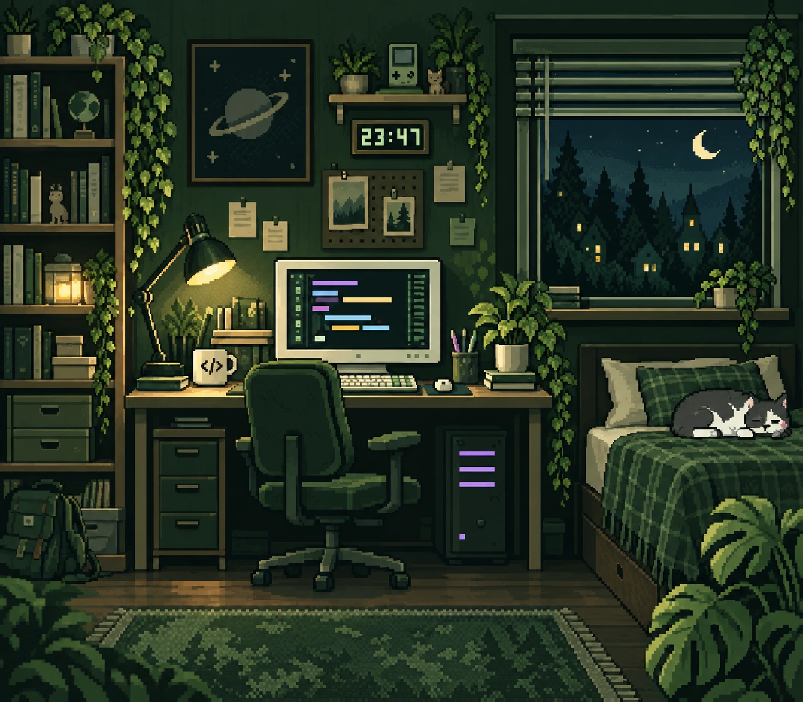

O PROJEKTU / GRAFIKA A PÍSMO
Grafické podklady
Odkud pochází pokoj, pixelové detaily a písmo na tomhle webu.
Ilustrace pokoje
Obrázek pokoje vznikl pomocí vestavěného nástroje OpenAI pro generování obrázků podle pixelové reference dodané autorem. Byl upraven pro portfolio: codingový stůl, noční okno, rostliny a spící kočka.

Soubor je uložen přímo v projektu ve formátu WebP. Noční barevná varianta používá CSS filtr.
Zobrazit původní zadání pro generování obrázku
Edit the provided pixel-art bedroom reference into a new original, polished hero illustration for Vojta's personal coding portfolio. Preserve the intimate, straight-on bedroom composition, crisp hand-placed 16-bit pixels, cozy nighttime mood, forest green and sage palette, and high amount of small environmental detail, but redesign the actual objects and arrangement so it is a personalized variation. Output ONLY the room illustration, no surrounding browser/window frame, no title bar, no outer border, no website layout, no captions. Landscape aspect ratio 8:7, edge to edge artwork. Central coding desk with cream CRT-style monitor showing abstract colored syntax lines (pastel blue, purple, pink, warm yellow), compact keyboard, mouse, a dark green ergonomic chair turned toward the screen, PC tower with three subtle lilac horizontal light bars. Left wall tall bookshelf with varied books, small storage drawers and trailing ivy; a little space poster with ringed planet. Right upper wall a large window with half-open blinds, a crescent moon, distant pine trees and tiny warm window lights at night. Beneath the window a cozy narrow bed with green plaid blanket and a small sleeping black-and-white cat, no floating text. Add a desk lamp casting a soft warm yellow pool of light, a cream mug with a tiny abstract code symbol, a small potted plant and pen cup, a few pinned notes with no readable text, a subtle pixel digital clock reading 23:47, and a leafy foreground plant in the lower right. Make it beautifully finished and readable at 500px wide. Keep the lighting intentional: deep forest shadows (#15251b, #1c2a20), medium green wall/wood surfaces (#2d402d), sage highlights (#b5cbb7), cream light (#d2e4c4). Slight warm illuminated details and restrained candy-colored syntax on the monitor. Visually distinct redesigned furniture and details from the reference, no logos, no watermark, no human characters, no title text, no UI. Crisp square pixel clusters, limited color ramps, subtle deliberate dithering; no smooth vectors, no photorealism, no blurry painterly textures, no neon or gradients.
Pixelová grafika
Lesní krajina, statické hvězdy, terminál, herní ovladač, karty a robotické logo byly vytvořeny pro toto portfolio jako SVG. Tréninková střelnice a její terč mají také vlastní pixelové SVG podklady.
Grafika používá celočíselné souřadnice a ostré hrany, aby si při zvětšení zachovala pixelový vzhled. Měsíc a padající hvězdy v pozadí stránky jsou vytvořené v CSS.
Barevné varianty
SVG soubory s příponou -night.svg zachovávají stejné tvary s barvami pro noční paletu. Přepínač vpravo nahoře mění barvy rozhraní i ilustrací a pamatuje si výběr v prohlížeči.
Písmo a licence
Pixelové nadpisy používají Pixelify Sans od Stefie Justprince. Písmo je uloženo lokálně jako assets/fonts/PixelifySans.ttf a je distribuováno beze změn pod licencí SIL Open Font License 1.1.
Copyright 2021 The Pixelify Sans Project Authors.
Písmo pochází z repozitáře Google Fonts. Úplný licenční text písma si můžeš přečíst přímo na tomto webu.